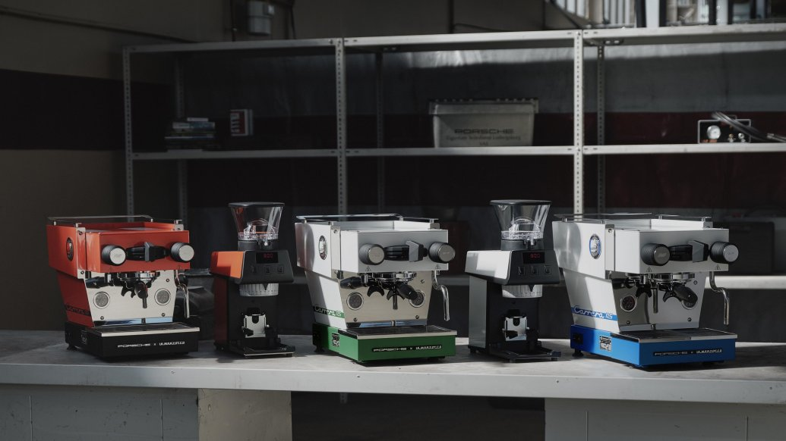

厨房工业设计 / 近期产品观察
从“鸭尾”到杯架，咖啡机延续跑车的设计语言
Porsche与La Marzocco的新联名系列，把配色、仪表和操作部件放进同一套视觉语言。

Porsche官网10月30日公布第二次与La Marzocco合作的咖啡系列，包括Linea Micra咖啡机与Pico磨豆机。系列前一日在保时捷博物馆亮相，灵感来自911 Carrera RS 2.7；本期将其作为近期工业设计观察，而非今日新品。
咖啡机杯架借鉴经典“鸭尾”造型，把手带有RS与2.7刻字，指针式压力表延续汽车仪表配色。它同时保留可转换出液方式的手柄、隔热蒸汽棒和可取用水箱，支持通过La Marzocco Home应用调温、设置与排程。联名外观不等于萃取性能提升。
Porsche Newsroom · 官方发布 · 发布会10月29日；报道与开售10月30日Yanko Design · 产品设计报道 · 2026-10-30发布会：10月29日；官网报道与开售：10月30日。超出24小时窗口，作为近期设计补选。